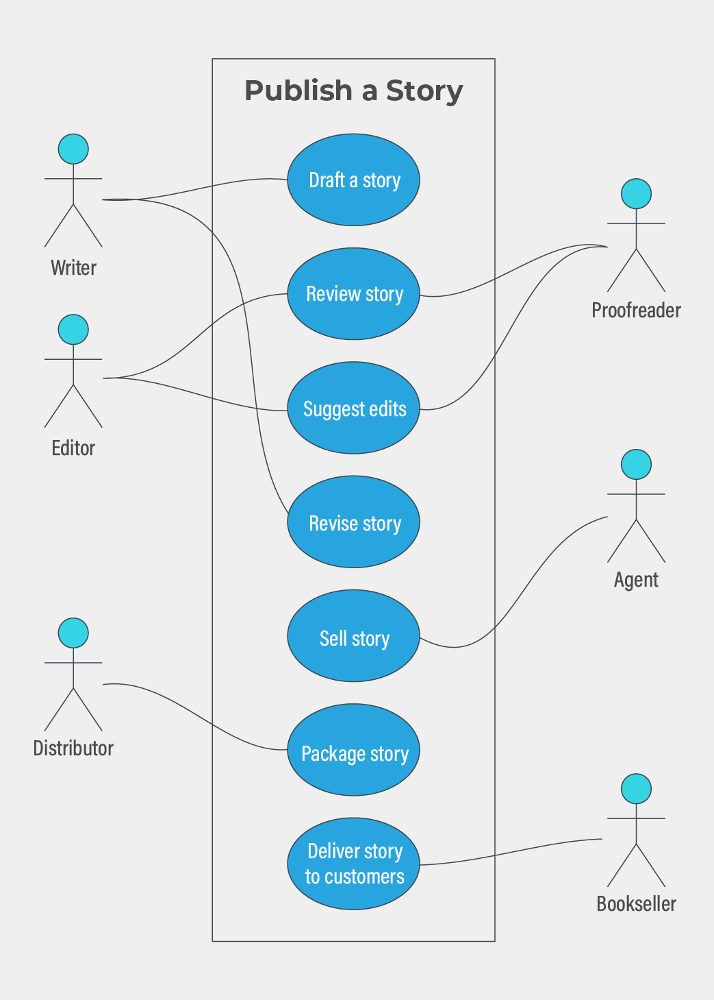
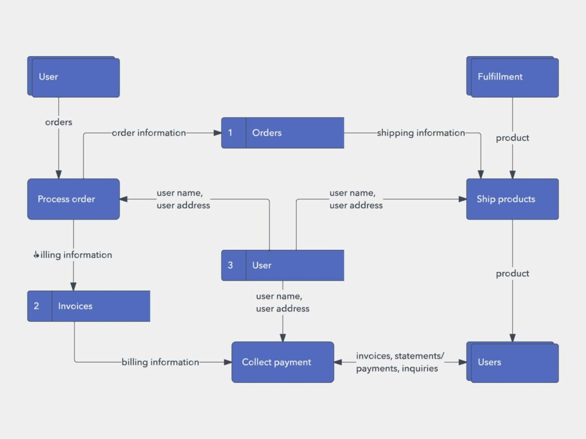
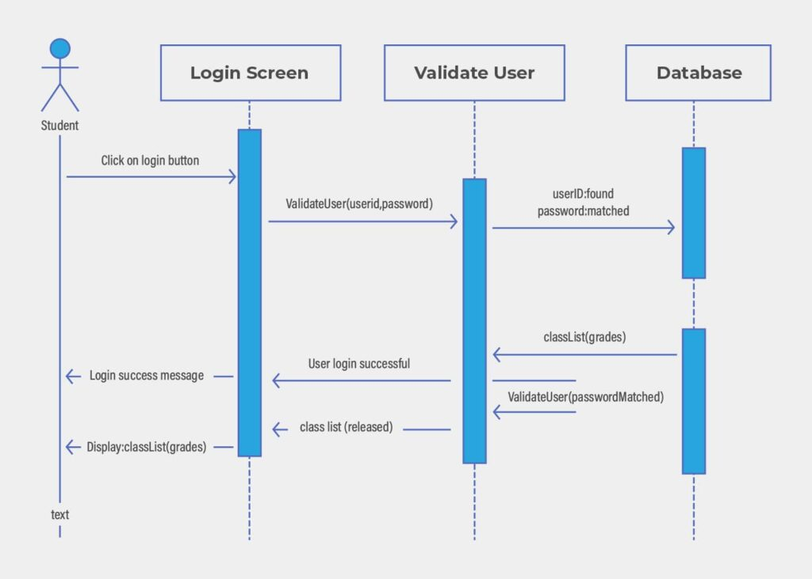
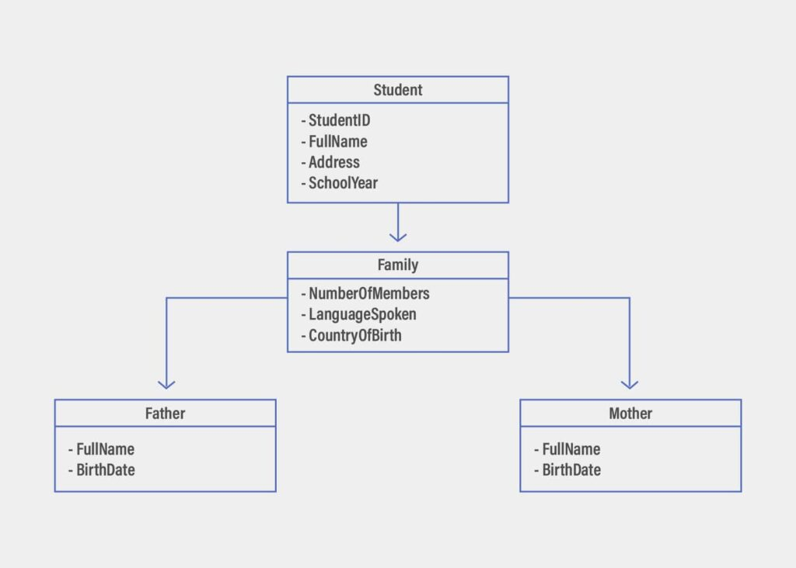
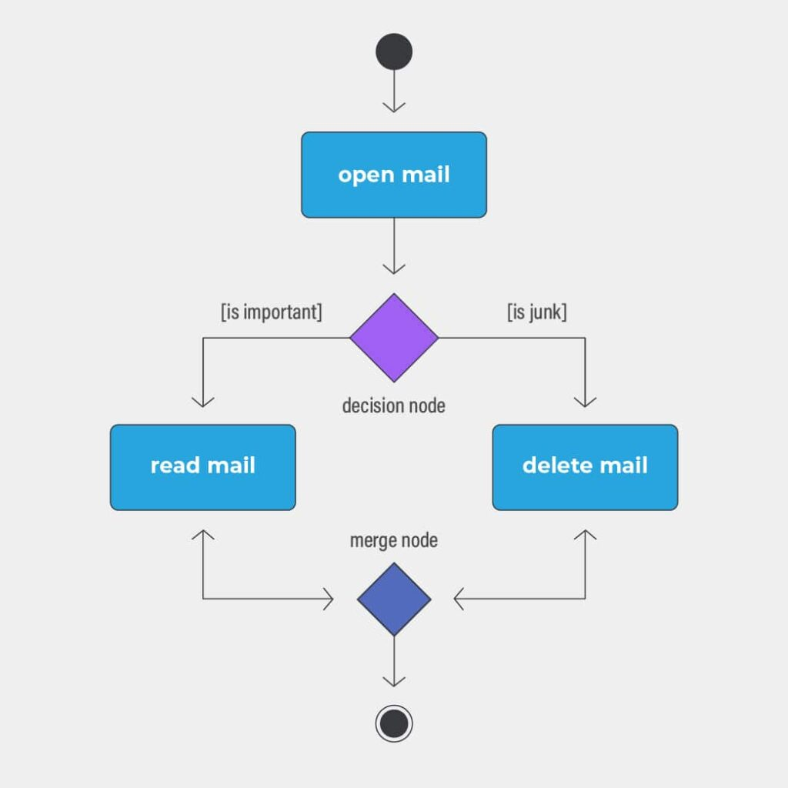

As we all know what software requirements specification, SRS totally describes what the software
will do & how it will function. The best SRS defines how an application will connect with system
hardware, human user & other programs. There are certain diagrams included in an SRS to get the
real-time solution for software development. These diagrams mainly rely on factors like
operational speed, response time, availability, portability, security, and speed of recovery
from adverse events.
Here we’re going to deeply discuss the various diagrams used in an SRS document along with the
suitable examples.
1. Use case diagram
Definition
A use case diagram is a graphical drawing of a user’s viable interactions with a system. A use
case diagram indicates various use cases and different types of users the system has. Use case
diagrams will often be accompanied by other types of diagrams.
Notation & Symbol
If there's a diagram then there's a symbol/ notation for sure. They are very clear & don't
involve as many types of symbols as other diagrams.
Horizontally egg-shaped symbols that represent the different uses that a user might have.
Stick figures that show the user actually employing the use cases.
A line symbol showing the relationship between actors and use cases. It is necessary to know
which actors are associated with which use cases.
A UML shape that enables putting different elements into groups.
Example

2. Data flow diagram
Definition
The data flow diagram shows how information flows through a process or system. Data flow includes
data inputs/ outputs, data storage, and the various sub-processes the data moves through.
Notation & Symbol
The two main types of notation are used for data flow diagrams. One is Yourdon-Coad and another
one is Gane-Sarson’s notation. The two different notation styles for different uses. Processes,
data stores, external entities, and data flows are the four main entities of the data flow
diagram.
A name ‘process’ given directly related to its function. For example ‘ship order’ can be used for
process & if we’re using Gane-Sarson notation- a rectangular box symbol is used to showcase the
process.
Data storage is represented with an arrow symbol. A symbol that indicates the flow direction.
This data could be electronic, written, or verbal- any of them.
A line symbol showing the relationship between actors and use cases. It is necessary to know
which actors are associated with which use cases.
Example

3. Sequence Diagram
Definition
Sequence Diagrams are interaction diagrams that detail how operations are working. They find the
interaction between objects in the context of a collaboration. Sequence Diagrams are based on
time and they show the correct order of the interaction. There is a vertical axis of the diagram
to represent time, what messages are sent, and when.
Notation & Symbol
A symbol that is played by an entity that interacts with the subject. External to the subject in
the sense that an instance of an actor is not a part of the instance of its related subject.
A lifeline symbol shows an individual participant in the Interaction.
Activation- A thin rectangle on a lifeline symbol used in a sequence diagram. It represents the
period during which an element is performing an operation.
Various Messages
A message defines a particular communication bond between the Lifelines of an Interaction.
A message defines a particular responsive communication between the Lifelines of an Interaction.
A self message represents the invocation of a message of the same lifeline.
A recursive message is a kind of message that represents the invocation of a message of the same
lifeline.
Example

4. Class Diagram
Definition
Class diagrams are one of the most useful types of diagrams as they figure out the structure of a
specific system by creating its classes, attributes, operations, designs, and relationships
between objects.
Notations & Symbols
Member access modifiers
All classes have different access levels depending on the access modifier
(visibility). Here are
the access levels with their corresponding symbols:
- Public (+)
- Private (-)
- Protected (#)
- Package (~)
- Derived (/)
- Static (underlined)
Classes
Particular for a system, a template for creating objects and implementing behavior.
- Name- The first row in a class shape.
- Attributes- The second row in a class shape. A separate line is used to show every attribute
of the class.
- Methods- The third row in a class shape. Recognized as operations, methods are displayed in
list format.
Classifiers that define data values. The values that can model both primitive types and
enumerations.
A group of operation signs and attribute definitions that define cohesive behaviors.
Representations of user-side data types. An enumeration includes groups of identifiers that
indicate values.
Model elements that represent stable entities like documents, databases in software systems.
Example

5. Activity Diagram
Definition
There are Activity diagrams, along with use case and state machine diagrams, which are counted as
behavior diagrams. The main reason behind this- they describe what must actually happen in the
modeled system.
Notation & Symbol
In SRS, actions are symbolized with round-edged rectangles.
A conditional branch in the flow. It includes a single input and two or more outputs. The diamond
shape is being used to show this node.
Controller that shows the flow between continuous steps in the diagram.
Symbolizes the beginning of the activity. Generally, represented by a black-circle symbol.
The end node is the final step in the activity. The outlined black circle is the notation of an
end node.
Example

In Ending
These are the main & most important diagrams available in the SRS documentation. They’re a
perfect example of storing more data in just a diagram & carrying out more space for other
activities. All diagrams are part of the process and trying to process & flow easier.